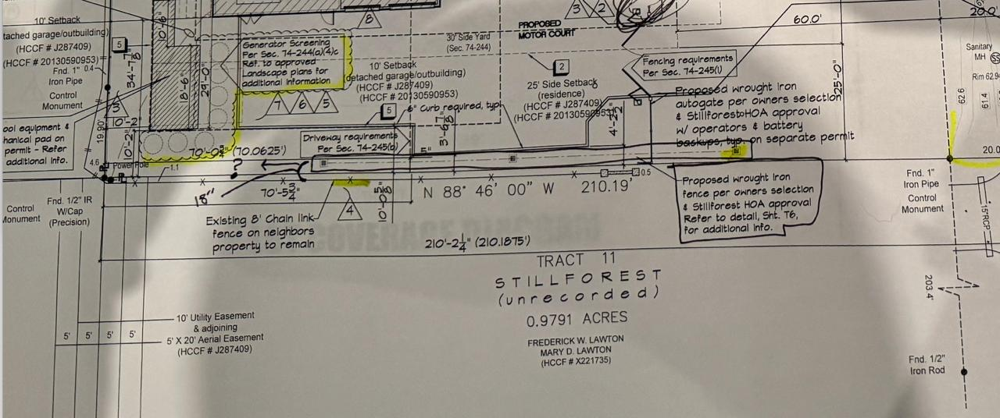

Statement of Purpose
This document presents, without editorial comment, the written record bearing on the obligation to install a vegetative screen along the southern property line at 45 Stillforest Street. Every statement reproduced below is taken verbatim from emails already held by the Committee. Nothing has been added, altered, or inferred. The purpose is to assist the Committee in exercising the authority it established in its own correspondence.
Exhibits of Record
Exhibit I
Approved Site Plans Specify Wrought Iron Fence — HOA Withholds Landscaping Approval at Initial Submission
Outstanding Condition Since November 2023
Date: Saturday, November 18, 2023 · 12:31 PM CST
From: Rod Proto <rod@protoenterprises.com> · Stillforest Building Committee
To: Craig Stiteler
CC: Fred Tavakoli, Don Jones, Jonathan Finger, Richard Hodge, Mitch Cox
Verbatim Quotation
"Craig, Committee just met and approved the package except for landscaping. On that one issue we did not feel we had enough detail to give final approval. The package can go to the city and we are ok dealing with that down the road."

The submitted site plan from this period — note "Proposed wrought iron fence per owners selection & Stillforest HOA approval" along the south boundary. "Existing 8' chain link fence on neighbors property to remain" noted separately. Tap to enlarge.
Note: The approved plans submitted for this review explicitly called for permanent wrought iron fencing along the south side. Landscaping approval was withheld — it has never been granted. This is an unresolved open condition going back nearly two and a half years, not a new request arising from the current dispute.
Exhibit II
Architect of Record Commits in Writing to Provide Screening
Written Commitment — Architect of Record
Date: Tuesday, February 4, 2025 · 4:37 PM CST
From: Craig Stiteler, Architect <csdarch@gmail.com>
To: Rod Proto <rod@protoenterprises.com>
CC: Don Jones, Jonathan Finger, Richard Hodge
Subject: Re: #45
Verbatim Quotation
"We will need to provide screening for sure. I will make sure we adhere to the HOA and PineyPoint requirements/guidelines."
Note: Craig Stiteler is the architect of record for 45 Stillforest, engaged by Fred Tavakoli. This commitment was made voluntarily, in writing, copied directly to the Building Committee and to the neighboring property owner. The statement is unambiguous and unqualified: screening will be provided.
Exhibit III
Property Owner & Architect Submit Screening Proposal to Committee — Explicitly Seeking HOA Approval
Explicit Acknowledgment of Screening Obligation
Date: Thursday, April 17, 2025 · 12:42 PM CDT (Fred to Craig) / 1:56 PM CDT (forwarded to Committee)
From: Fred Tavakoli, forwarded by Scott Epps <scotte6310@gmail.com> (CSD)
To: Rod Proto, Richard Hodge, Don Jones, Jonathan Finger
CC: Fred Tavakoli, Craig Stiteler
Subject: Fwd: Bamboo Screening on South Side
Fred Tavakoli — Verbatim (April 17, 2025, 12:42 PM CDT)
"Screening can be installed along the entire south side by attaching bamboo screening fence over the existing chain-link fence. Please see the attached picture — I believe it looks good and is also cost-effective."
Scott Epps, CSD — Forwarding to Committee (April 17, 2025, 1:56 PM CDT)
"Attached is an image for the bamboo shielding that Fred wants to use to cover the existing chain link fence on the south side of the property. Fred wanted it to be reviewed and approved prior to purchase. Please let us know if this is acceptable and falls within the approved materials in the Stillforest rules and regulations."
Note: This exhibit is significant not for what was proposed, but for what the act of proposing it proves. By going to the Building Committee and seeking approval for a south-side screening solution, Fred Tavakoli and his architect explicitly acknowledged three things: (1) they understood an obligation to screen the south side existed; (2) HOA approval was required for any solution they chose; and (3) they were actively working to fulfill that obligation. This submission predates the Committee's formal April 27, 2025 condition — meaning the obligation was already understood by both parties before the Committee put it in writing. The Committee did not approve bamboo; subsequent correspondence confirmed bamboo is inconsistent with the permanence and character expected of Stillforest properties.
Exhibit IV
Building Committee Establishes Vegetative Screen as a Formal Condition of Approval
Formal Condition of Approval
Date: Sunday, April 27, 2025 · 9:43 AM CDT
From: Rod Proto <rod@protoenterprises.com> · Stillforest Building Committee
To: Fred Tavakoli, Craig Stiteler, Jonathan Finger, Don Jones, Paul Parsons, Scott Epps, Jesse Blackwell
CC: Richard Hodge, C. Mitchell Cox
Subject: Re: Pool Plans
Verbatim Quotation — Section: "Neighbor Consideration and Restoration of Vegetation"
"The existing chain-link fence on the adjoining property to your south is recessed approximately 18 inches within that neighbor's property line. During recent construction activities, vegetation located on this adjacent property along that fence line was removed without prior consultation or approval from the neighbor. As part of the Committee's conditions for approval, we respectfully request that the new fencing with columns and wrought iron installation include a live vegetative screen (such as shrubbery or hedges) along the southern boundary to replace the visual barrier that was previously in place with a similar look."
Note: The Committee's language is explicit: this is a condition of approval — not a suggestion. It was communicated directly to Fred Tavakoli and his architect, with the neighboring property owner copied. No written objection was filed. The condition built directly on what Fred's own team had already acknowledged ten days earlier when they brought the bamboo proposal to the Committee (Exhibit III).
Exhibit V
Property Owner Acknowledges the Vegetation Request Without Filing Written Objection
Acknowledgment — No Objection Filed
Date: Monday, April 28, 2025 · 5:47 PM CDT
From: Fred Tavakoli <ftstavax@yahoo.com>
To: Rod Proto, Jonathan Finger, Don Jones, Craig Stiteler, Scott Epps, Jesse Blackwell
CC: Richard Hodge, C. Mitchell Cox
Subject: Re: Pool Plans
Verbatim Quotation
"Are you speaking of vegetation that existed on the south side by chain link fence? Is that what you want me to plant?"
Note: Mr. Tavakoli identified the specific vegetation in question and framed his response around whether and what to plant — not around whether the obligation existed. No written objection to the Committee's condition was filed at this time or in any subsequent correspondence.
Exhibit VI
Building Committee Defines the Compliance Standard
Formal Condition of Approval
Date: Monday, April 28, 2025 · 6:05 PM CDT
From: Rod Proto <rod@protoenterprises.com>
To: Richard Hodge, Don Jones, Jonathan Finger
Subject: Re: FW: Re: Pool Plans
Verbatim Quotation
"we are not suggesting any specific planting rather asking that planting be done with something that stays green year round and provides a screen approximately that height of the fence."
Note: The Committee's compliance benchmark is on the record: evergreen, height of fence. This is the objective standard against which any proposed solution must be measured. Bamboo does not meet it.
Exhibit VII
Property Owner Commits in Writing to Complete Required Landscaping Per City and HOA Requirements
Written Commitment — Property Owner
Date: Friday, January 2, 2026 · 11:42 AM CST (repeated in substance across multiple emails, January 1–2, 2026)
From: Fred Tavakoli <ftstavax@yahoo.com>
To: Richard Hodge
CC: Jonathan Finger, C. Mitchell Cox, Don Jones
Verbatim Quotation
"When my project reaches its final landscaping phase, any required landscaping will be completed in accordance with City and HOA requirements, as has always been the plan."
Also: Friday, January 1, 2026 · 3:11 PM CST
From: Fred Tavakoli
To: Richard Hodge
CC: Annette Arriaga, City of Piney Point Village
Verbatim Quotation
"I am happy to participate in a City-led review or site walkthrough at an appropriate time, and to work toward a reasonable resolution consistent with City guidance once construction reaches the final landscaping stage."
Note: Mr. Tavakoli committed in writing — copied to the City of Piney Point — that required landscaping will be completed per City and HOA requirements. He called this "the plan that has always been in place." Construction at 45 Stillforest is now substantially complete. That commitment is due.
Chronological Summary
| Date |
Party |
Action / Statement |
| Nov. 18, 2023 |
Rod Proto
Committee |
Landscaping approval withheld at initial submission. Never subsequently granted. Open Condition |
| Feb. 4, 2025 |
Craig Stiteler
Architect |
"We will need to provide screening for sure. I will make sure we adhere to the HOA and PineyPoint requirements." Written to Committee, CC: Richard Hodge. Written Commitment |
| Apr. 17, 2025 |
Fred Tavakoli
Owner, 45 / Architect |
Submits bamboo screening proposal to the HOA Committee seeking approval for a south-side screening solution — explicitly acknowledging the obligation existed and that Committee approval was required before proceeding. Acknowledgment of Obligation |
| Apr. 27, 2025 |
Rod Proto
Committee |
Vegetative screen made a formal condition of approval for fence/pool submission. Standard: evergreen, height of fence, southern boundary. Condition of Approval |
| Apr. 28, 2025 |
Fred Tavakoli
Owner, 45 |
Acknowledges vegetation in question. Frames response around what to plant. No written objection to the condition filed. |
| Jan. 1–2, 2026 |
Fred Tavakoli
Owner, 45 |
Commits in writing to completing required landscaping per City and HOA requirements at final phase. Copied to City of Piney Point. Written Commitment |
| May 2026 |
— |
Construction at 45 Stillforest substantially complete. Screening condition unaddressed. Landscaping approval never granted. |
Findings
Summary of the Written Record
The written record establishes the obligation from every angle — and the property owner's own conduct confirms he knew it.
I.
The Building Committee withheld landscaping approval at the initial November 2023 submission. That approval has never been granted. The obligation is nearly two and a half years old.
II.
The architect of record — Craig Stiteler, engaged by the property owner — stated in writing on February 4, 2025: "We will need to provide screening for sure." This was communicated directly to the Committee and to the neighboring property owner.
III.
The Committee formally established, on April 27, 2025, that a live vegetative screen along the southern boundary was a condition of approval — not a recommendation. The standard was defined: evergreen, height of fence. No written objection was filed by the property owner.
IV.
The property owner committed in writing, on January 2, 2026 — in correspondence copied to the City of Piney Point — that "any required landscaping will be completed in accordance with City and HOA requirements, as has always been the plan." Construction at 45 Stillforest is now substantially complete.
V.
On April 17, 2025 — before the Committee issued its formal condition — Fred Tavakoli's team brought a south-side screening proposal to the HOA Committee and explicitly sought approval. That act is an acknowledgment that the obligation was already understood. You do not seek HOA approval for a screening solution unless you know you have an obligation to screen.
VI.
The approved site plans called for permanent wrought iron fencing along the south boundary. The bamboo proposal was never approved. The Committee's stated standard is evergreen, height of fence — permanent quality consistent with Stillforest character. Bamboo does not meet it. The obligation is: wrought iron per the approved plans, plus a live vegetative screen per the April 27 condition.
→
The Committee established this obligation. The architect committed to it in writing. The property owner acknowledged it by seeking HOA approval for a screening solution. He then confirmed it again in writing in January 2026. The record does not leave the question of obligation open. It leaves only the question of whether the Committee will exercise the authority it already established.